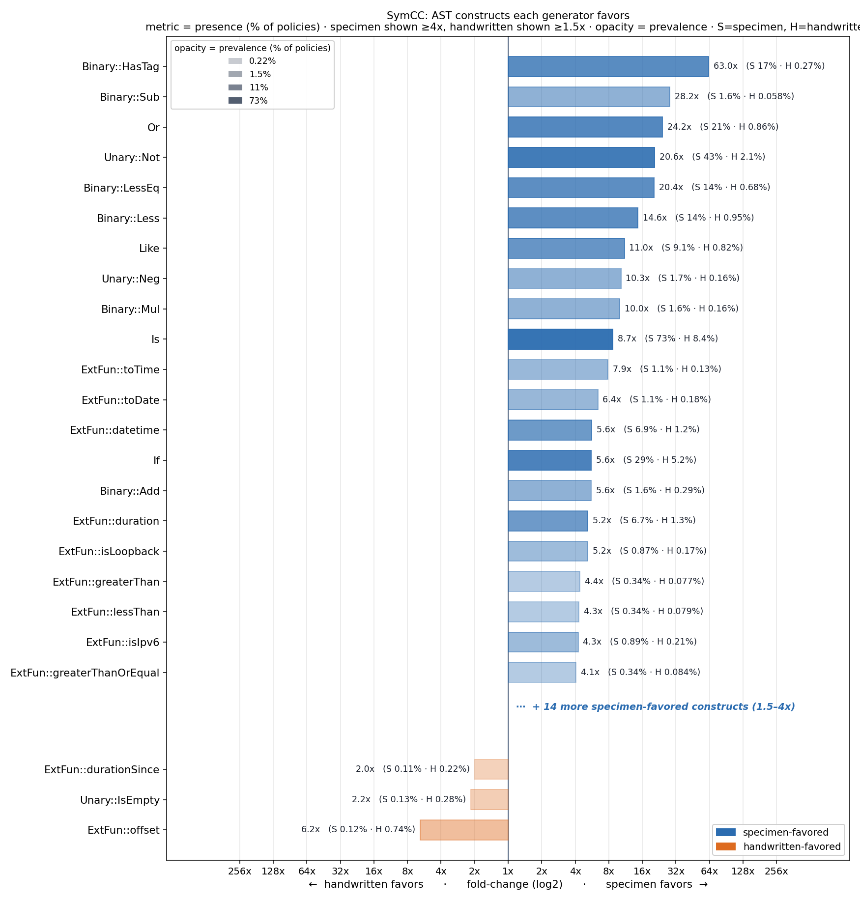
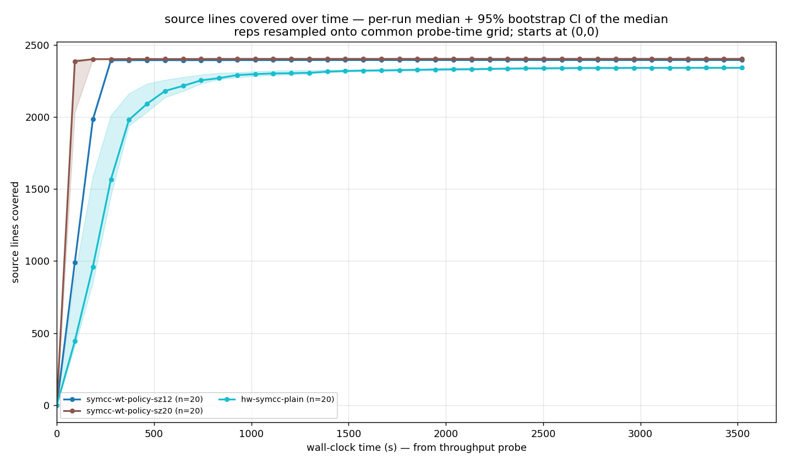
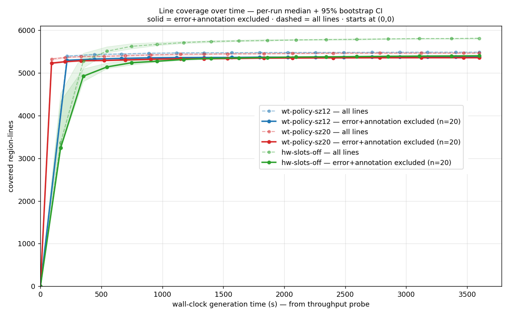
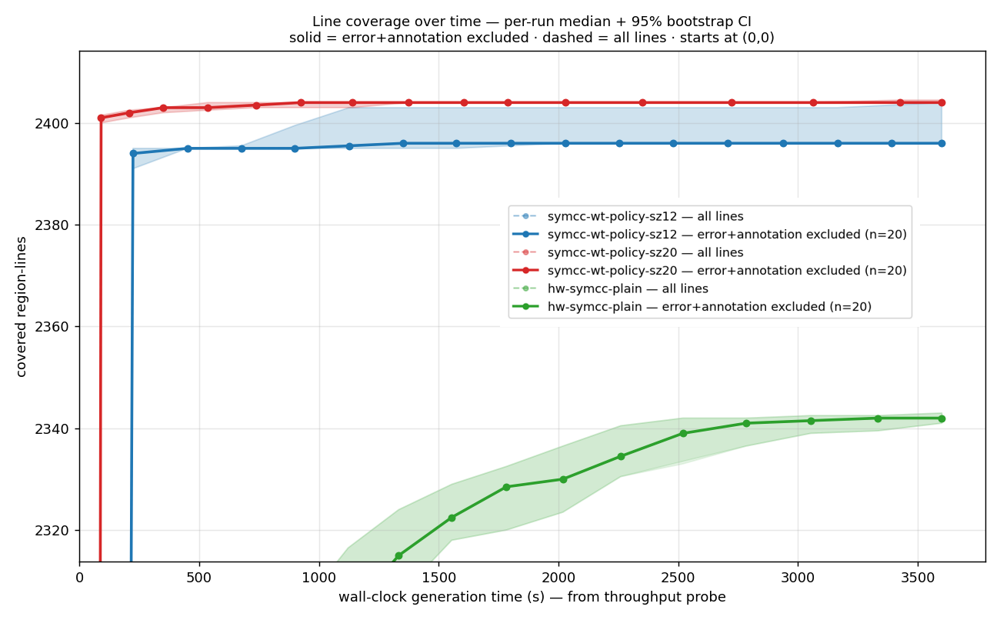
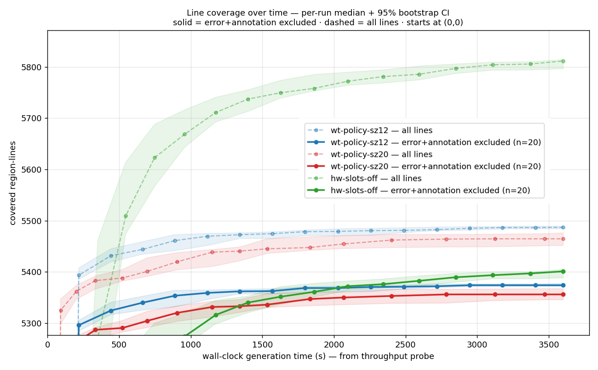
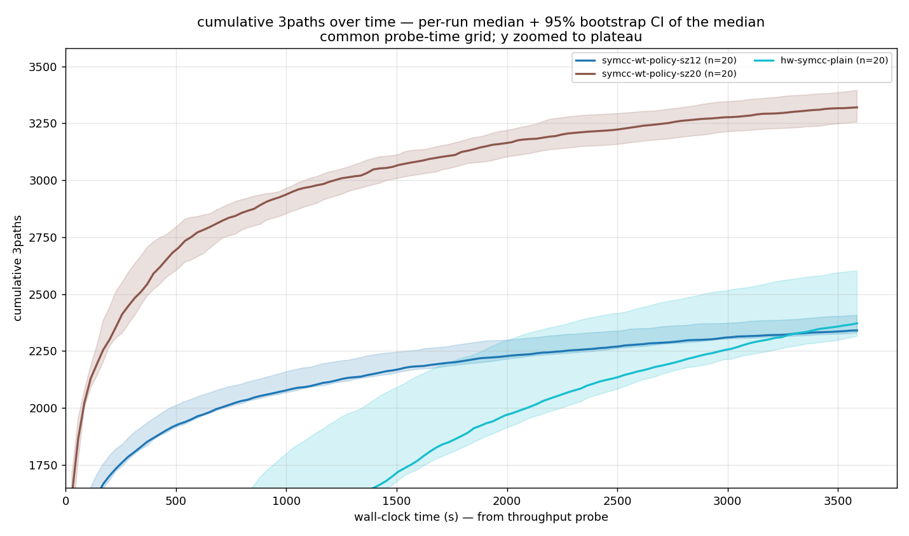
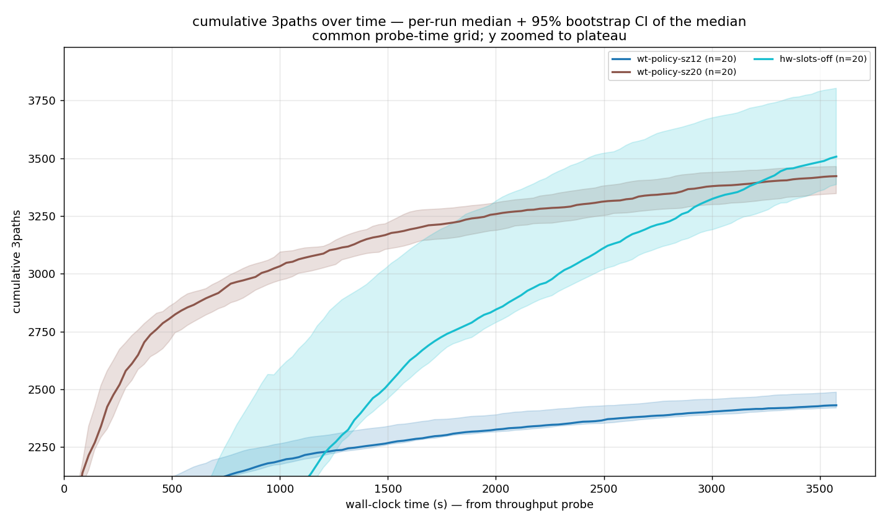
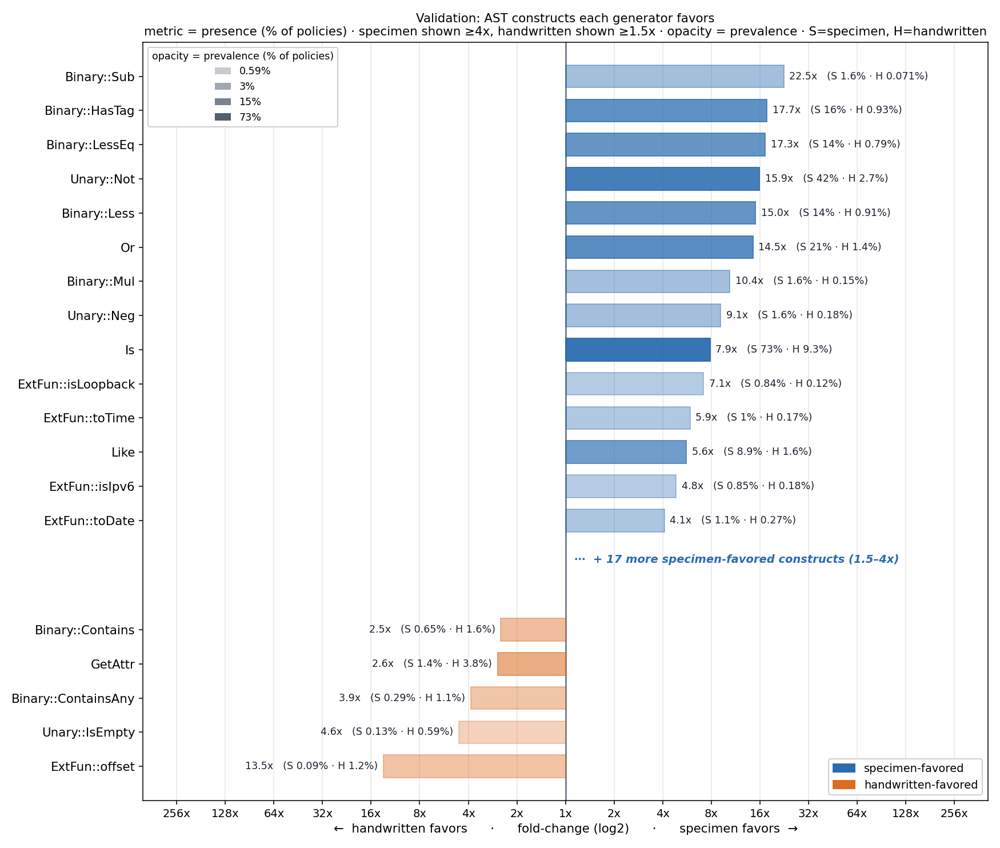

A language for writing and enforcing authorization policies
"Can this principal do this action on this resource?"
permit ( principal == User::"alice",
action == Action::"view",
resource in Album::"vacation" )
when { resource.owner == principal };
How we test it
We test Cedar differentially: one input, two engines, any mismatch is a bug
The method is only as strong as the inputs we feed both sides.
But where do the inputs come from?
The catch
Those inputs come from a hand-tuned generator that cost months to build
~5,400
lines of Rust
~6 months
to build
Hand-written, hand-maintained, hand-tuned to satisfy the Cedar type system.
The goal
Lift the burden: automate the generator.
But it must be as good as the handwritten one.
So what makes a generator good?
The real measure
How well does it find bugs?
caught 2 of 5
The measure we actually want: bugs found ÷ bugs present. But real bugs are hidden — we can't compute it.
So we approximate
Can't see the bugs → chase throughput & coverage
Throughput
many draws
Coverage
wide spread
More draws (throughput) × wider spread (coverage) ⇒ better odds on a hidden bug — and the bar to clear is the handwritten generator.
What kills throughput
Rejection sampling: guess-and-check throws most draws away
✗ Guess & check
def genBST (lo hi : Nat) : Gen Tree := do
let t ← genTree -- any random tree
if isBST lo hi t then
pure t -- keep it
else
genBST lo hi -- ✗ reject, try again
Almost every tree fails the check.
✓ Build by construction
def genBST (lo hi : Nat) : Gen Tree := do
if lo > hi then pure .leaf else do
let x ← choose lo hi -- key in [lo,hi]
let l ← genBST lo x
let r ← genBST x hi
pure (.node l x r)
Every draw is a valid BST.
Enter Specimen
Specimen turns choosing a generator into a search: a spec in, a generator out
A spec
an inductive relation
Specimen
enumerate & score schedules
A generator
valid inputs, by construction
Based on Rocq's QuickChick and my Testing Theorems, Fully Automatically (OOPSLA '26). My work made it handle Cedar's type system.
Specimen's domain
Deriving generators for inductive relations
The relation
inductive BST :
Nat → Nat → Tree → Prop where
| leaf : lo ≤ hi → BST lo hi .leaf
| node :
lo ≤ x ≤ hi →
BST lo x l →
BST x hi r →
BST lo hi (.node l x r)
A mode → a generator
derive_mutual
generator (fun lo hi => ∃ t, BST lo hi t)
Inputs lo hi, output t.
Fix a mode — which arguments are inputs, which is the output. The generator builds t by randomly applying a rule that fits, further constraining it, and recursing.
Reading a rule as a schedule
The leaf rule has one schedule — nothing to search
The rule
| leaf :
lo ≤ hi →
BST lo hi .leaf
Its only schedule
do
check lo ≤ hi
return .leaf
Both bounds are inputs, so lo ≤ hi is only checked — one generator, nothing to search.
What Specimen searches over
The node rule: three orderings of its hypotheses
bound second · 1 check
do
(l, x) ← BST lo x l
check lo ≤ x ≤ hi
r ← BST x hi r
return (node l x r)
bound third · 1 check, late
do
(l, x) ← BST lo x l
r ← BST x hi r
check lo ≤ x ≤ hi
return (node l x r)
bound first · 0 checks ✓
do
x ← lo ≤ x ≤ hi
l ← BST lo x l
r ← BST x hi r
return (node l x r)
produce
a ← P a
check
check P a
The heuristic scores fewest checks best — so across these orderings it keeps bound first.
The heuristic
Score each schedule on how likely — and how fast — it produces valid data
Valid by construction
How likely each draw is valid — fewer checks, fewer rejections.
Fast to produce
How quickly it runs — cheap steps, little backtracking.
Read statically off each schedule — an ordering of a rule's hypotheses. Specimen scores them all and keeps the best per rule: that's the generator.
The mismatch
But Specimen needs a relation — and Cedar's typechecker is a one-way function
Function typeOf
Unidirectional: expr → type. Can't run it backward to produce exprs of a target type.
Relation HasType
Multi-directional: HasType e t. Specimen can invert it into a generator.
Specimen derives generators from inductive relations, not functions.
The conversion
Claude rewrites typeOf as a relation — then we test it against the original
~1,200 lines, 44 relations. No proof — but the loop caught real gaps where the relation drifted.
Where I started
The Specimen I inherited wasn't ready for something Cedar-sized
Fixed heuristic & weighting
One built-in score and weighting — nothing to tune.
Modular scoring + weighting
Pick the score & weights at the derive site.
No introspection
A poor generator failed silently — no way to see why.
Parity with Testing Theorems scoring improved scheduling but not full Cedar; distinguishing expensive vs cheap checks and preferring recursive calls did.
Advancement · weighting
A weight modifier lifts a starved rule — hasTag to 63×
-- bias how often each rule fires
def favorHasTag (base : Nat) (rule : Name) : Nat :=
match rule with
| "hasTag" => base * 2 + 1 -- boost
| _ => base
set_option specimen.weightModifier "favorHasTag" in …

Putting it to work
With honest scores and a live readout, LLM-supported iteration converged
The readout flags a weak rule; fix the relation, the heuristic, or the weights, re-derive — until every feature is exercised.
Evaluation setup
Two real DRT targets, hour-long runs, 20 reps
2 targets
validator · symbolic compiler
up to 1 hour
n ≈ 20 reps · 95% bootstrap confidence interval
Handwritten runs coverage-guided (cargo-fuzz); Specimen emits valid inputs by construction, at two term sizes — 12 & 20 (bigger → deeper policies).
line coverage
throughput
k-path coverage
construct diversity
Line coverage over time
Specimen reaches its coverage plateau in seconds; handwritten takes ~25 min
Symbolic compiler

Validator

Line coverage — plateau (zoom)
Zoomed in: handwritten wins on all lines (its error paths); the modelable lines are tied
Symbolic compiler

Validator

The first 30 seconds
Within the first seconds Specimen has already saturated
3-path coverage: size 20 leads on symcc; handwritten overtakes late on the validator
Symbolic compiler

Validator

Constructs each generator favors
Specimen exercises constructs the handwritten generator rarely emits
Validator

Symbolic compiler
It found real bugs
The derived generator surfaced three genuine spec-vs-Rust divergences
1 · Actions escape their reserved type
Lean accepts an action UID of any entity type (e.g. name::"doc1"); Rust rejects.
2 · Extension types lose their qualifier
Schema Cedar::duration vs a duration(...) result: Rust rejects; Lean's ExtType collapses them and accepts.
3 · Spurious tagNotFound on a projected-record getTag — Lean stores records as a
non-canonical ordered list, so the receiver decodes in a different attribute order and misses the
capability. Fix: sort record attrs on decode.
Bug deep-dive · #3
A valid getTag Lean rejects — because it stores records in a non-canonical order
The policy
Read a tag off a projected record — ({…}).getTag(k).
Rust: well-typed ✓
Lean: tagNotFound ✗
Why Lean is wrong
Records are stored as an ordered list, not canonicalized.
The projected receiver decodes attributes in a different order.
The capability proving the tag exists is keyed to that order → lost.
Fix: canonicalize — sort record attributes on decode. A genuine spec bug, surfaced by a generator no one hand-tuned.
Takeaways
One relational spec of the validator yields a near-complete generator for valid Cedar
Why it's a win
• Covers the valid fragment of Cedar almost entirely — from one relational spec.
• Saturates coverage in seconds — ideal for short campaigns (a bugfix, a new feature).
• Weighting is derived automatically — a single constructor override, vs hand-weighting every constructor.
• Free with the spec: if the Lean model goes relational, the generator updates with it.
• Sound: 0 spurious mismatches over ~2.9M validations.
Next steps
• Specify the error semantics — cover the validator's erroring paths the spec can't yet model.
• Coverage-guided Specimen — feed coverage back into the schedule search.